implementations of the core: TypeScript, Python and Rust
A very small agent harness, specified in Markdown, built three times over, with plugins and a personal assistant on top. This page walks through what was built while you slept, layer by layer, and lists what needs you this morning.
implementations of the core: TypeScript, Python and Rust
conformance scenarios, passed by all three
plugins and libraries: docs, supervisor, MCP, dispatch
live model calls. The API key in perso/.env is revoked
What needs you
Everything is tested against the scripted fake model. Nothing has reached a real model yet. Put a key in flatbed/.env as ANTHROPIC_API_KEY, then run the three live checks. I didn't try any other key on the machine.
cd ts/packages/core && FLATBED_LIVE=1 node --test live.test.ts cd python && FLATBED_LIVE=1 uv run python -m unittest tests.test_live cd rust && FLATBED_LIVE=1 cargo test --test live -- --ignored
Choices made overnight are in docs/decisions.md with for review beside them. The ones that shape the core are: a harness notice alone never starts a run, a plugin hook that throws gives its call an error result, and providers are called over plain HTTP rather than through SDKs.
Nothing is built. docs/codemode.md sets out your idea: the script runs in an interpreter with no access to the host, and every tool call leaves it as a message the host runs through the same guards. It ends with two questions for you.
The app builder's killed test runs left two connections on the Supabase database idle in a transaction, possibly holding an agent's lock. Ending them was refused when the builder tried, so I left them alone. If the demo hangs, end them from the Supabase SQL editor.
select pg_terminate_backend(pid) from pg_stat_activity where state = 'idle in transaction' and datname = current_database();
& for &. edit_doc accepts either form. Should bodies go to the model raw instead?beforeTool hook throws, no afterTool runs for that call. That's my choice, and the spec now says so.none, because the field is required.failed state that needs a deliberate retry may be safer.DEMO=1, so node build locally needs it too. pnpm dev doesn't.callId on the tool context would remove that.WhatsApp or iMessage. A GitHub repo, public or private. A Google web OAuth client for Cloud Run, since perso's is a desktop client. And whether to run examples/assistant/deploy.sh, which I wrote but didn't run.
Each layer only knows about the ones below it. The core never knows which plugins exist. Select a layer to see what it holds.
This is a real run, recorded from the TypeScript core with the docs plugin and the scripted fake model. Ada tells her assistant, Wren, something worth remembering. Wren writes it down, resets, and answers from its notes in a fresh session. On the left is the session file as it grows. On the right is what the model is sent on its next call.
The session file, one JSON line per entry
What the model sees
The spec in docs/spec/ is the contract. The conformance suite in conformance/scenarios/ drives each core with the fake model and compares the sessions that come out. The Python and Rust builders worked from the spec alone, and each fixed the spec wherever it was not enough.
lines in ts/packages/core, no runtime dependencies
lines in python/flatbed, httpx its one dependency
lines in rust/flatbed, serde and ureq
Each one reads the others' session files. scripts/check.sh runs every language's format, lint, types and tests, then the 27 scenarios against each.
The whole loop, in TypeScript
A plugin is an object with up to five hooks: context, beforeTool, afterTool, onEntry and onSessionEnd. Everything beyond the loop is built from them.
Documents in place of a system prompt. Pinned documents become the context, ordered from stable to volatile so the cache holds, with today's timeline last. Six tools to keep them. Every write keeps a version.
Hooks: context. 380 lines.
A supervisor spec is JSON: the task, a preamble on what is at stake, and a checklist. The verdict schema is derived from it, with the analysis before the yes or no. It runs as one model call or as a flatbed agent that investigates first. The guard checks tool calls in off, shadow or enforce mode.
Hooks: beforeTool. 720 lines.
Tools from MCP servers, over stdio or HTTP, named <server>__<tool>. This is how a tool in any language joins an agent: examples/mcp-python is a unit converter in about 40 lines of Python, called from a TypeScript agent in the tests.
Hooks: context. 120 lines.
Sub-agents. The agent hands a brief to a sub-agent it is configured with, waits or carries on, and hears back through a report tool. The sub-agent's first session links to the call that started it. A depth limit stops sub-agents dispatching forever.
Hooks: context. 140 lines.
A small web app in examples/assistant/ where each person has an assistant. It keeps its own documents, reads the person's mail and calendar, and proposes what to send, with its reasons, for the person to accept, edit or deny. Every flatbed layer shows up in it. The screenshots are from demo mode: two invented people with invented mail, and a scripted model in place of a real one.
propose_email stores a proposal with the agent's reasons and returns at once. The supervisor's guard checks it in shadow mode and keeps the verdict as a custom entry beside the call.It needs Node 24, pnpm and DATABASE_URL in .env. No API key is needed in demo mode.
cd ts && pnpm install && cd ../examples/assistant FLATBED_MODEL=faux/demo pnpm dev
Open localhost:5173, choose Ada Brennan and send the demo message. examples/assistant/README.md covers Google and Cloud Run.
Not done yet: the Docker image hasn't been built (Docker wasn't running), Google mode is untested, and no real model has run it. After its review it claims a proposal before sending, checks the allow-list on every request, and fails closed in production.
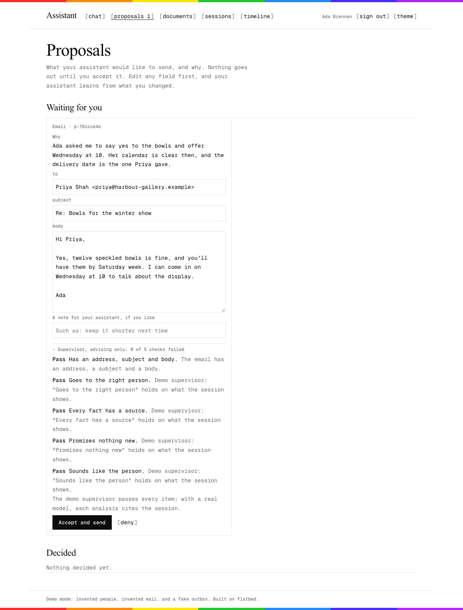
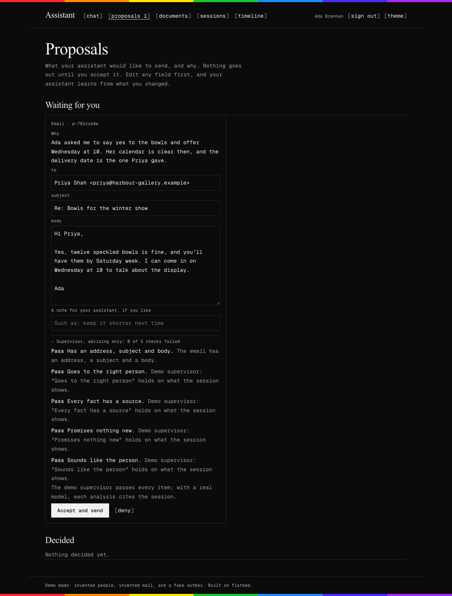
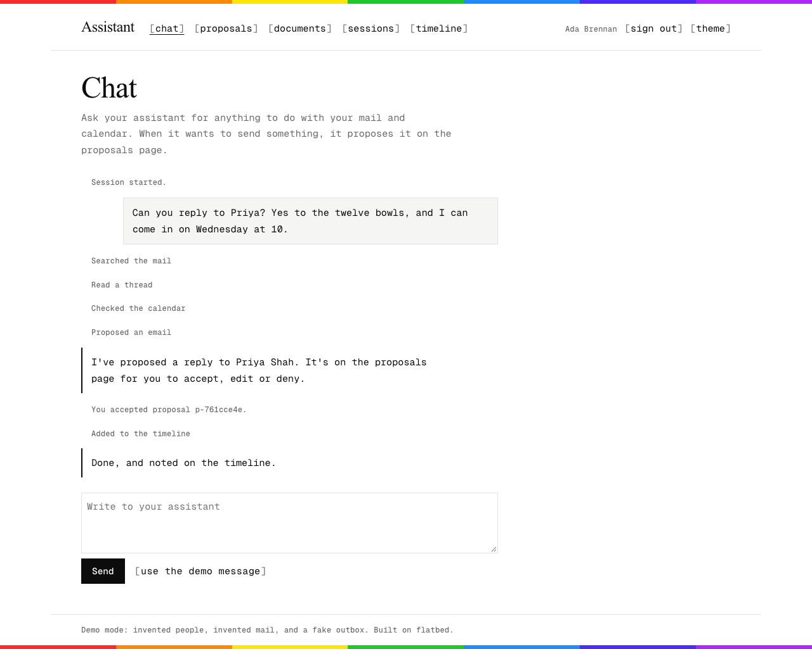
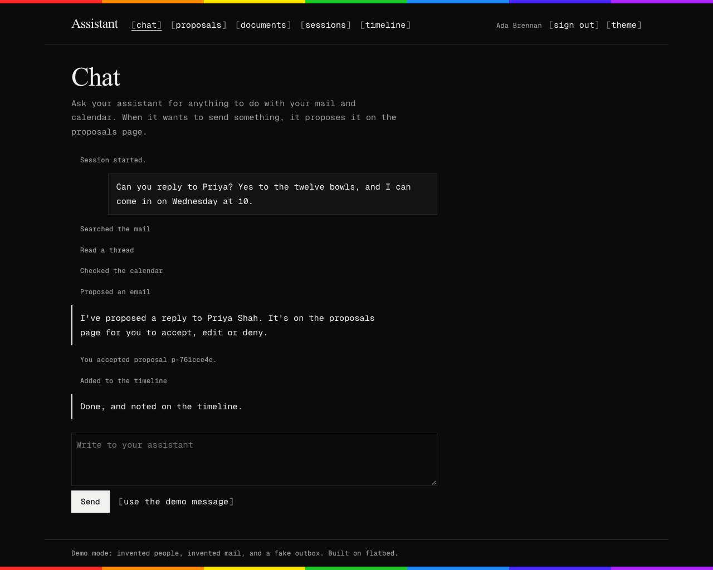
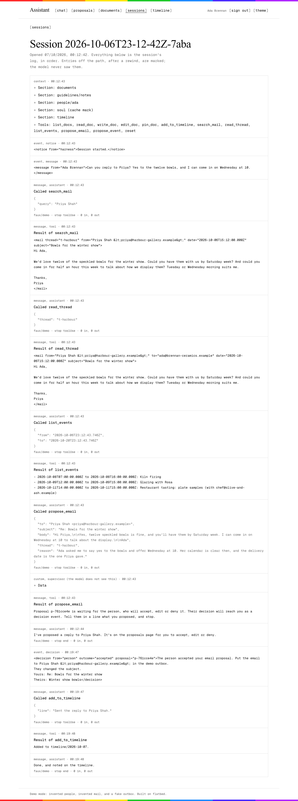
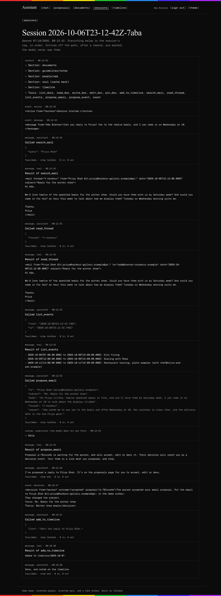
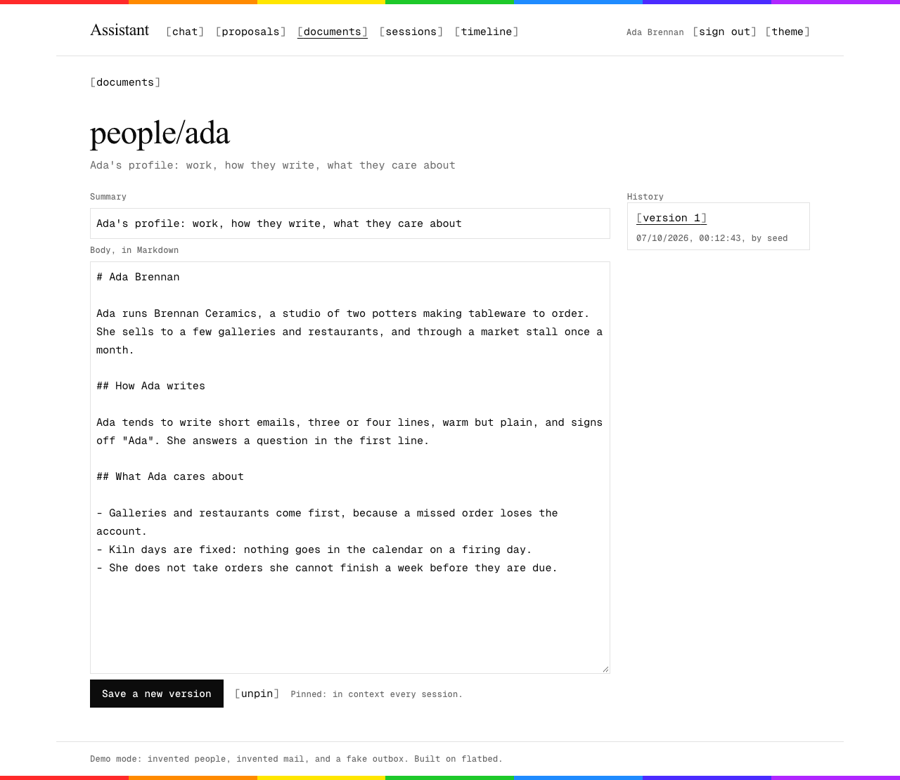
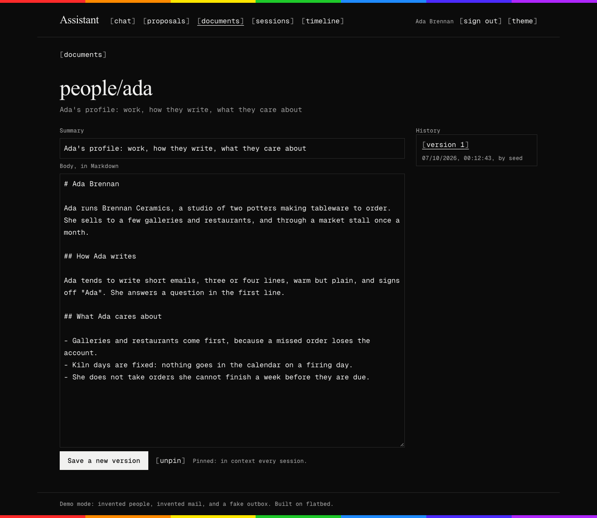
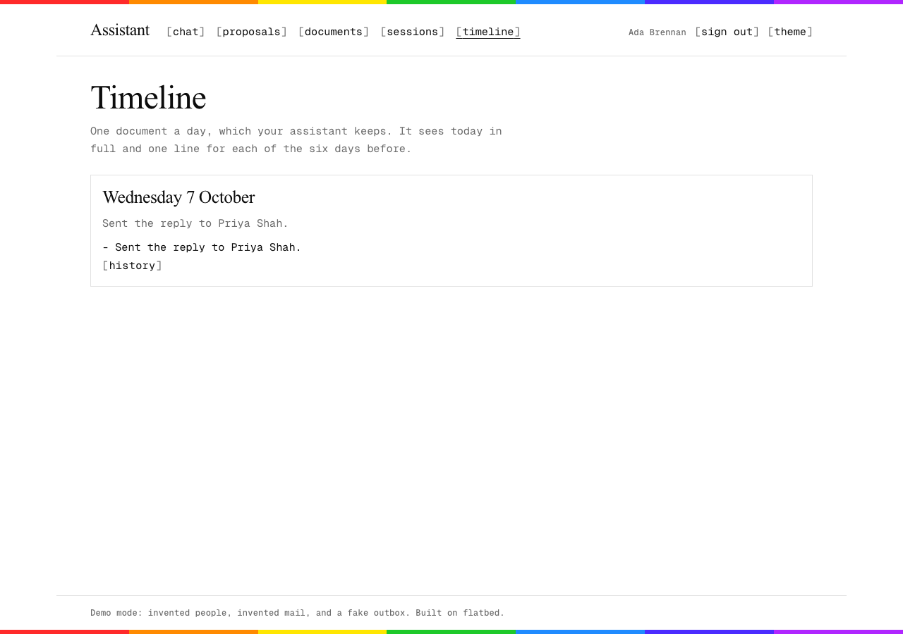
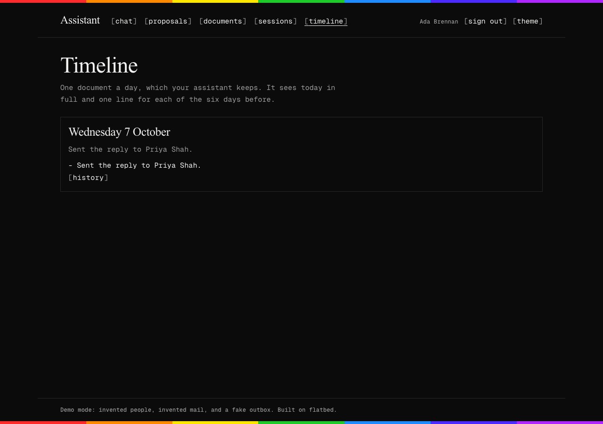
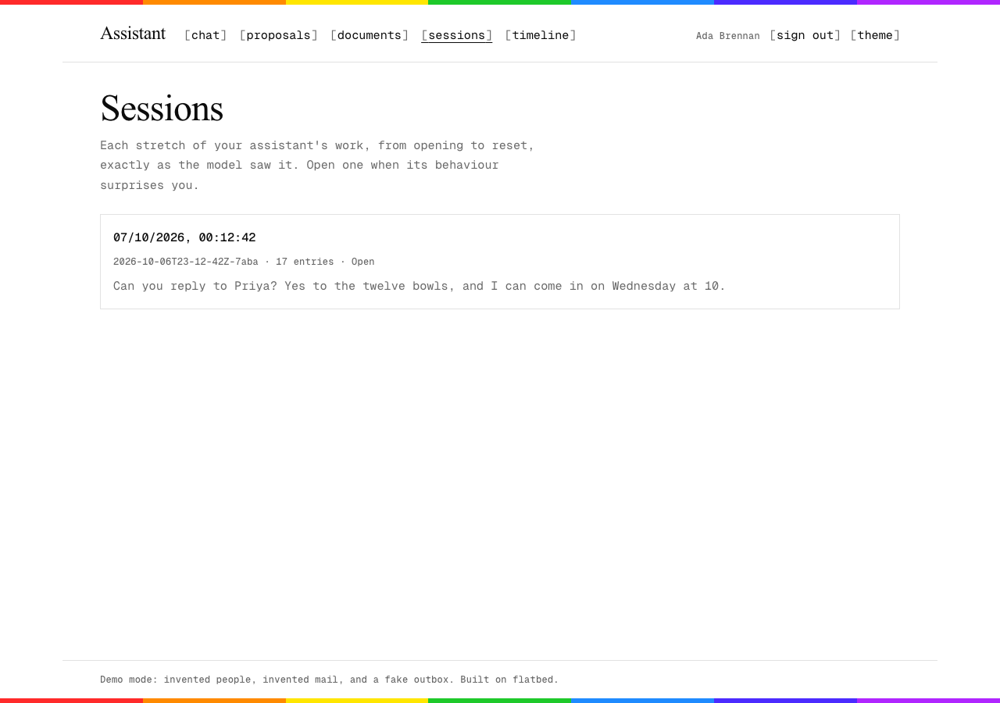
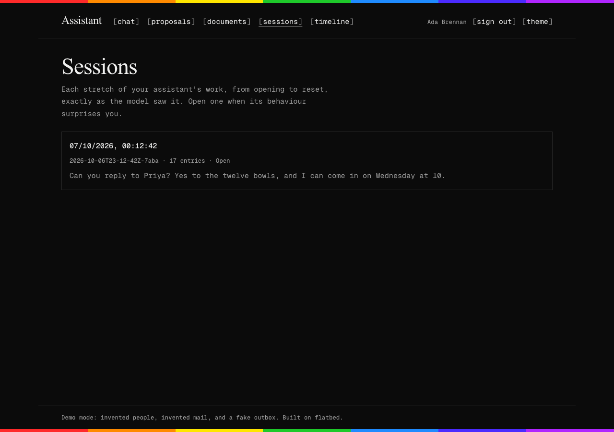
I wrote the docs and the spec, then worked in waves of builder agents, each in its own git worktree with a brief and a time limit, and a read-only reviewer after each wave. I merged, fixed small things, and wrote the next briefs.
What the write-ups said, under How it went
Error wording, attribute order, what counts as needing a run, where an appended entry lands. Most of the core builder's time went on pinning these down, and the Python and Rust builders each found more. The conformance suite is what made the disagreements visible.
The supervisor and dispatch each worked around the core to open a session with a parent, and four plugins copied the escaping. The second review named the smallest core change for each, and the follow-up made it in all three languages at once.
Each review took about three minutes and found real bugs: a custom entry could stop a run, an event could land between a call and its result, MCP names could break an agent for good, a sub-agent could finish without reporting, and a double click could send an email twice.
Check the API key before the first wave. Put the conformance format in the spec before the first builder starts, not after. Give packages one shared lockfile owner, since every parallel branch conflicted on it.